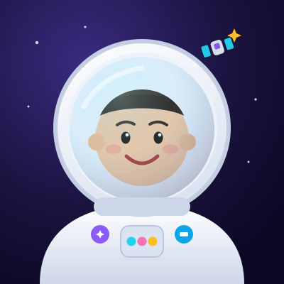
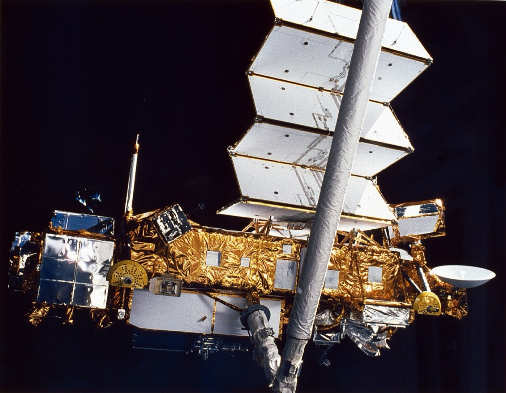

Hi, I'm Maya 👋
I'm 10 years old, I'm in Grade 5, and I am completely, totally, 100% obsessed with space. I built this website for my science project — I hope you like it!

How I fell in love with satellites
It started one night when my dad and I looked up and saw a tiny moving star gliding across the sky. It wasn't a star at all — it was a satellite! I couldn't believe a machine was up there, so far away and moving so fast, and I could see it with my own eyes.
Then I learned something amazing: the same kind of human-made machine is doing jobs all around us every day. Communications satellites carry phone calls, texts and internet to ships, planes and far-away villages. Broadcast satellites send TV and radio to millions of homes. Navigation satellites show the blue dot on a map. Weather satellites warn us about storms — and some satellites even help keep countries safe and rescue people in trouble.
After that I read every space book in the library (twice). I drew satellites on every page of my notebook. And when our teacher said we could choose ANY topic for our science project… I already knew mine.
So here it is: everything I learned, turned into a colourful little website. I hope it makes you look up at the sky tonight too. ✨
My space shelf
James Webb Telescope
My favourite satellite ever. Its golden mirror takes the most beautiful pictures of space.
The Space Station
It's like a floating house for astronauts. I would 100% live there if I could.
Communication Satellites
They carry phone calls, TV and internet to every corner of the planet — even the middle of the ocean. I think that's pure magic.
The Night Sky
On clear nights I count stars from my garden and try to spot a moving satellite.

🛰️ The one I'm drawing todayI draw every satellite I learn about
Every time I discover a new satellite, I draw it — with its solar panels, its dish, its antennas and lots of sparkles. My notebook is almost full already!
My drawing of the James Webb Telescope won a sticker from my teacher. I stuck it right on the cover. 🏅
My dream job: to become an aerospace engineer and help design a satellite that looks at the ocean and helps protect sea animals.
My top 5 space facts
Satellites can be seen!
On a clear night, a moving dot of light gliding across the sky is probably a satellite — no telescope needed.
They help save lives
Satellites spot giant storms and forest fires from space, giving people time to get to safety.
The Sun gives them power
No plugs in space! Satellites use big solar panels to turn sunlight into electricity.
They never really stop
With no air to slow them down, they keep gliding around Earth for years and years and years.
It all started with a beep
The first satellite, Sputnik 1, just went “beep beep beep” — and it changed the whole world forever.
One more thing…
Thank you for visiting my project! If you learned even one new thing, my mission was a success. 🚀
Send a message to Mission Control
Did you spot a satellite in the sky? Do you have a space question? Or just want to say hi? Fill in the little form and my pretend inbox will light up. 🛰️
Be kind: telling someone you liked their work is one of the nicest things on the internet.
That's my whole space adventure
Want to explore again? Head back to the start, or dive straight into the fun facts.